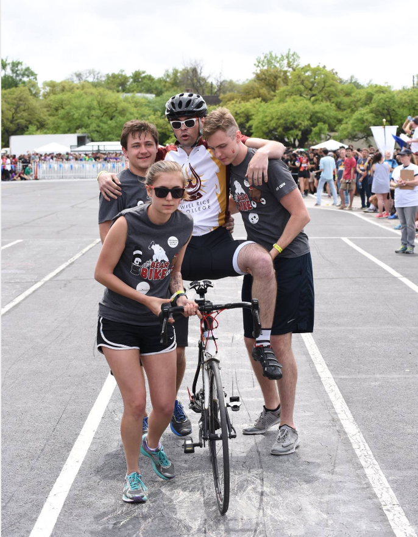

WRWS
Countdown to Beer BikeWill Rice Bike Team

There are few experiences in life that parallel being a part of the Will Rice Bike Team. It sets your heart on fire. When your soul burns with the power of the Phoenix, the freezing headwinds of winter become a cool breeze through your hair as the pistons of your legs pump you down the asphalt of glories past and future. You will experience speeds known only to skydivers and waterfall barrel riders. And on the weekend of Beer Bike, when you're standing before all of your friends and your college, your family, in the rust and gold jersey for which you proudly sacrificed your time, sweat, and body, the spirit of generations of Will Rice bike teams burns with yours. If the day is just right and you make the dream of a Sweep a reality, for a moment, you fly with the gods. You will never be more proud. It will be a more valuable memory than the day you graduate or the birth of your first child. We love this.
Other colleges don't understand what it means to love something the way we yearn for the thrill of a carbon frame barreling by the Bubble with abandon. We hold every important cycling record to date and there is no end in sight. Will Rice is the most winningest college in the history of Beer Bike and we will always give ourselves to victory. Alumni, Women, and Men, we make it happen together. If you have any interest in basking in the glory of being part of the bike team, please contact any one of the team captains. All biking experience levels are welcome, from not knowing how to clip into cleated pedals to years of time in the saddle. We all enjoy a relaxing casual ride, too. Riding is an experience we would love to share with anyone who is even half-interested. Don’t be afraid to talk to anyone on the team about how to join us on our next ride. See you on the track!
-Authors: Joshua Borja '24, Jessica Cao '23, Jonathan Lloyd '23, Victor Raphals-Kath '23 , Emma Moran '23 (2023 Bike Team Captains)
Join the Strava!!
Will Rice Chug Team

Does the whole concept of Beer Bike sound like an amazing experience that you just know that you have to
participate, but biking maybe isn't your thing? Do you love to stay hydrated, or at the very least get
there as
quickly as possible? Then the Will Rice Chug Team is for you!
The Chug Team is the another piece of the glorious Beer Bike trifecta, and no less important than the
Bikers or
Pit Crew. The Chuggers start off each race and chug in between each biker, and getting a fast chug can
be
critical in getting Will Rice a good spot around the track and attaining another glorious sweep.
Chugging is
simple, perfecting it is hard. However, some passionate (and probably bored) Rice students have designed
simple
but effective "Chug Cans" with a wide mouth (for a smooth pour) and an air hole that ensures you are
getting
maximum water per second delivered straight to your gullet. The act of chugging is elegantly simple; it
has one
rule and one rule only: Don't spill. Each Chugger has an allowance of one jigger (1.5 ounces) of
precious water
that is allowed to grace their clothes or the ground around them before their chug is ruled a "Wet Chug"
and
their team is penalized five seconds. Beer Bike Sweeps hang in the balance between those five second
violations,
and nobody understands this better than the Chuggers. In order to accomplish this, a Chugger has to be
quick,
precise, calm, passionate, and above all: thirsty. So while our fleet Bikers outpace our foes on the
track, our
stoic Chuggers suck for glory.
If reading this awakens the spirit of the phoenix within you and all you can think is "When can I
start?", look
no further than the Will Rice Commons. After lunch announcements it isn't uncommon to hear the bellowing
"CHUUUUUUUUG PRAAAAACTICE!" from captains Kevin and Alicia, signaling aspiring Chuggers and veterans
alike that
their time has come. Even if you are nervous, I wholeheartedly encourage you to come try it once or
twice and
see how you like it. We all started out with no chugging experience and we also enjoy the thrill of
peaceful,
casual chugs too. Chugging is an experience that we would all jump at the chance at being able to share
with
anyone who is even half-interested
-Author: Marshall Wilson, WRC '16, Chugger
Will Rice Pit Crew
The excitement of being on the track on Beer Bike cannot be matched. Right there alongside the Chug and
Bike
Teams stands the Pit Crew. Often overlooked due to its breathtaking efficiency, the Pit Crew is very
good at two
things: slowing bikes down quickly, and speeding bikes up quickly. The faster the pit crew (along with
the Chug
Team) works, the faster the next Biker can be on the track tearing up the competition.
On the "slowing bikes down" side of things, the Pit employs a Runner and two Catchers. The Runner, who
stands at
the back edge of the pit waving their arms, jumping up and down, and generally making sure the weary
bikers make
it into the right lane. Once the Biker spots them, the Runner runs (surprise!) down the pit and in
between the
Catchers. The Catchers' job is to stop (and preferably catch) the biker so as to avoid a penalty.
Catchers work
in pairs and are preferably good at stopping things without breaking them.
On flipside of the Pit Crew, we have those responsible for "speeding bikes up". The Pit uses a Flagger
and two
Throwers for this task. The flagger is Chug Team liason, and does not stand in the Pit, but accompanies
each
Chugger to the top of the table tower. They count the Chugger down as the Biker comes into the Pit, and
wave
their flag (read: towel) a carefully calculated amount of time before the Chugger finishes. This signals
the
Throwers to begin their throw. An encyclopedic knowledge of average chug times is a must for the
Flagger. The
Throwers have the task of ejecting the Biker out of the Pit and into the race as fast as possible. They
coordinate with the Chuggers and Flagger so that, beginning the throw when the flag goes up, they throw
the
Biker across the line just after the Chugger finishes chugging. Being strong-as-hell is a plus.
The Pit Crew is the grease in the gears of the Will Rice Beer Bike Team. With sure-handed Catchers,
swift
Runners, attentive Flaggers, and burly Throwers, the Pit Crew needs all types to make Will Rice great.
-Author: Kevin McDonough, WRC '14, Thrower